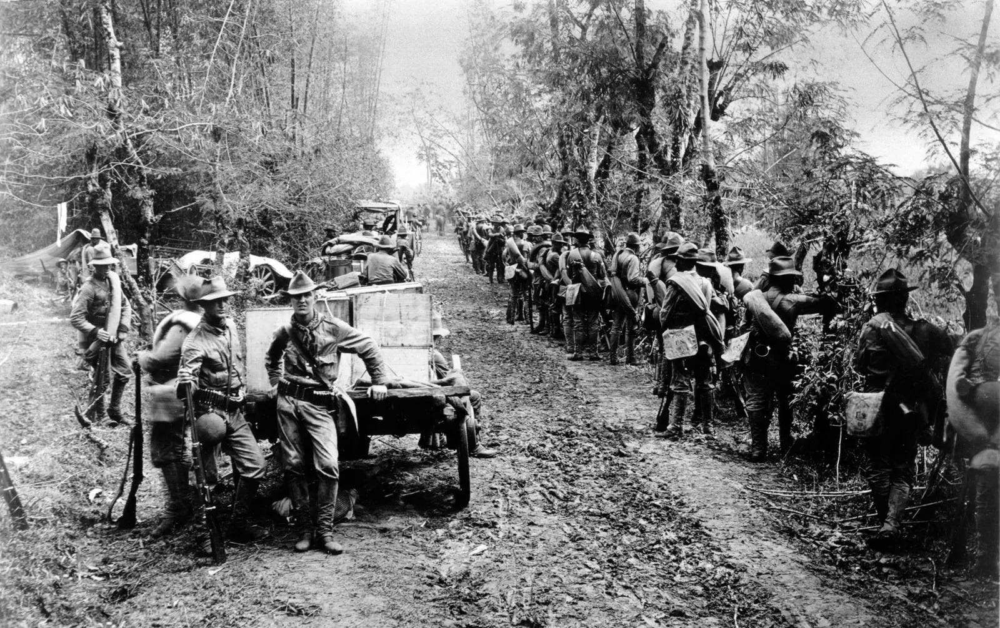

EDUCATION AND GOVERNMENT REFORMS
By Yzah Quintinita
“Manila – Early 1900s”

As dawn broke over Manila, I walked the streets of a city both familiar and new. The
American colonial government, after formally taking control in 1898 following the Treaty of Paris, set forth
sweeping reforms intended to reshape Philippine society most notably in education and governance.
In 1901, the arrival of the Thomasites, over 500 American teachers, marked a turning point.
They established a public school system with English as the medium of instruction, replacing Spanish.
Their mission was not just to teach reading and writing, but also to inculcate democratic values and
civic responsibility. Schools sprang up rapidly across the islands, opening opportunities for Filipinos
of all backgrounds. This created the foundation for a new Filipino intelligentsia that would play a
vital role in future political movements.
At the same time, the colonial government introduced new political structures. The Philippine Commission,
led initially by William Howard Taft, functioned as the legislative and executive body, paving the way for
Filipino participation. By 1907, the Philippine Assembly was created as the first elected legislative body,
though powers were still limited under American oversight. Filipino leaders like Manuel Quezon began to
emerge, advocating for greater autonomy and preparing their countrymen for eventual self-rule.
Walking through the halls of government offices and listening to debates, I sensed both cooperation and cautious
resistance. While reforms promised progress, they also served to entrench American authority. Yet, through
these changes, Filipinos were gaining valuable experience in self-governance and education which were tools they would
wield in their enduring quest for independence.
THE PHILIPPINE-AMERICAN WAR
By Ian Lloyd Villaro
“Battlefields across Luzon – 1899 to 1902”

The war that followed the Spanish-American conflict was one of the most devastating chapters in Philippine
history. After Spain ceded the islands to the United States in 1898, Filipino forces under Emilio Aguinaldo
proclaimed the First Philippine Republic, asserting their sovereignty. However, the Americans viewed the
archipelago as theirs to govern.
What began as skirmishes in Manila quickly escalated into full-scale war in February 1899. I witnessed the
determination of Filipino soldiers fighting with limited arms and supplies against a powerful and well-equipped
American military. The guerrilla tactics they employed such as hit-and-run attacks, ambushes in dense forests, and use
of knowledge of local terrain prolonged the conflict far beyond initial expectations.
The war was brutal and left thousands dead, including many civilians caught in the crossfire. American forces
implemented scorched earth policies, and towns were often destroyed to cut off rebel support. In 1901, Aguinaldo
was captured, signaling the gradual end of organized resistance. The war officially concluded in 1902 with the
proclamation of Philippine “peace,” though sporadic fighting continued in some regions.
Despite defeat, the Filipino fight against colonization laid the emotional and political groundwork for later
independence efforts. The war’s legacy remained etched in the national consciousness as a testament to
resilience and sacrifice.
NATIONALISM AND INDEPENDENCE MOVEMENT
By Ian Lloyd Villaro
“Manila and Beyond – Early 1900s”

Even under American rule, the desire for independence burned fiercely among Filipinos. I found myself among
groups of intellectuals, politicians, and common folk united by a vision of a free nation. The early 1900s
witnessed the birth of organized nationalist movements that sought self-governance through peaceful means.
The establishment of the Philippine Assembly in 1907 allowed Filipino representatives a voice in government
for the first time. Leaders like Manuel Quezon and Sergio Osmeña used this platform to press for greater
autonomy and eventual independence. They worked to demonstrate the capacity of Filipinos for self-rule,
carefully navigating the constraints imposed by the colonial administration.
At the same time, cultural nationalism flourished. Literary works, theater, and historical writings celebrated
Filipino identity, language, and heritage. Organizations like the Nacionalista Party promoted pride in Filipino
roots while engaging with modern political ideas.
This era was one of cautious hope and strategic patience. The independence movement gained momentum, linking
past struggles against Spanish rule to the contemporary fight against American colonization. Though full
freedom was still years away, these years forged a stronger, more unified national identity, a foundation that
would support the Philippines’ eventual emergence as an independent republic in 1946.